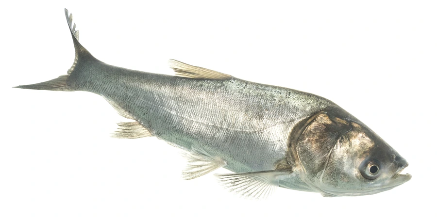

鱼类 · 动物界
鲢鱼 Hypophthalmichthys molitrix

中国“四大家鱼”之一，头小体侧扁、通体银白，以浮游植物为食，善跳跃，是重要的淡水滤食性经济鱼类。
- 分类
- 门脊索动物门纲硬骨鱼纲目鲤形目科鲤科属鲢属
- 栖息环境
- 江河、湖泊和水库的中上层水域，喜水质肥沃、浮游生物丰富的水体
- 地理分布
- 原产中国长江、珠江、黄河、黑龙江等水系，全球数十个国家引种养殖
- 保护级别
- 暂无评估；中国未列入国家重点保护野生动物名录（四大家鱼之一）
物种志
鲢鱼体侧扁、稍高，头较小，眼睛位于头侧中轴以下，口端位，无须；体色银白，鳞片细小，各鳍灰白。成鱼体长一般 50–80 cm，体重 2–8 kg，最大个体可超过 20 kg。它与同属的鳙鱼外形相似，区别在于鲢鱼头更小、体色更白，胸鳍末端也不达腹鳍起点。
鲢鱼是典型的滤食性鱼类，主食浮游植物，也滤食浮游动物和有机碎屑，靠细密排列的鳃耙把水中的食物滤出。它多在水体中上层活动，性活泼，受惊或水温骤变时常常跃出水面。一般 4–5 龄性成熟，繁殖期在 4–6 月，需要江河涨水的刺激，卵为漂流性，在长江中要上溯到产卵场繁殖。鲢鱼原产中国长江、珠江、黄河、黑龙江等水系，是四大家鱼之一，被引入全球数十个国家养殖，在北美等地形成入侵种群。目前它没有IUCN 的正式评估，中国未将其列入国家重点保护野生动物名录。
形态与习性
- 食性滤食浮游植物和浮游动物，靠细密鳃耙过滤水体
- 体长一般 50–80 cm，最大可超过 1 m
- 体重常见 2–8 kg，最大可超过 20 kg
- 繁殖4–5 龄性成熟，4–6 月产卵，每尾可产数十万粒
- 洄游繁殖期上溯江河产卵，卵随水流漂流孵化
- 习性善跳跃，受惊时常跃出水面
趣味知识
- 鲢鱼没有胃，靠细密的鳃耙滤食浮游生物，是天然的“水体过滤器”。
- 它被引入美国后大量繁殖，成为当地最令人头疼的外来入侵鱼类之一。
- 鲢鱼受惊时能跃出水面 1 m 多高，有时会直接跳进渔船。